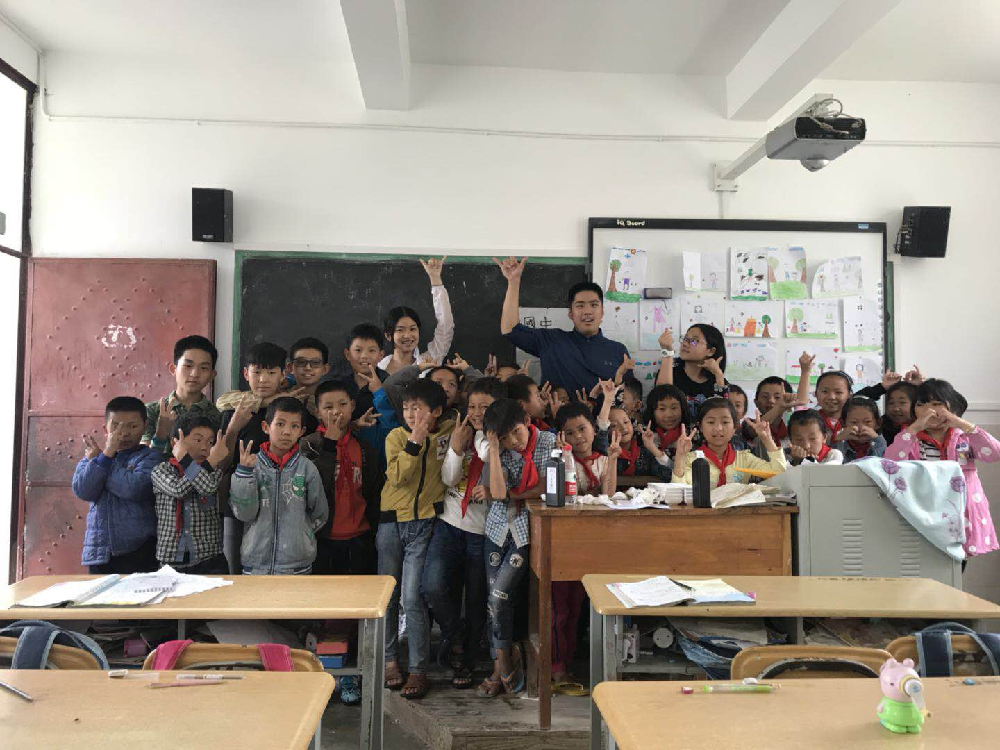

This is my own thinking after a aid trip to Yunnan

Challenge and Sublimation
This is my second year of volunteer teaching in Yunnan. During 6-day stay, we had met various challenges and difficulties. With collaborated team efforts, we had overcome difficulties and sublimated our volunteer teaching experience.
First challenge came from force majeure. Our first day's courses had to be cancelled due to the bad weather and canceled flight. After arrival, we met our second challenge that the projector in our classroom did not work. Last but not least, the bad weather condition forced us to postpone all planned PE courses.
No cross, no crown. Our team worked together to solve all the challenges and difficulties. We coordinated with other teams and exchanged classrooms once we needed projector for teaching. We flexibly adjusted our original course schedule according to weather condition.
In addition to challenges, there were also a lot of unforgettable memories during this trip. The most impressive student must be Xiang. He is a positive and hard-working student, with great passion on everything. He lost the first table tennis game to me on the first day. After that, he asked me to teach him table tennis skills during every break time. I was impressed by his great aspiration.
By means of this volunteer teaching trip, I felt that the meaning of such trip was bidirectional. We, as the volunteer teachers, taught those local students knowledge and skills. At the same time, we learned from those honest and optimistic students how to take care of ourselves in harsh conditions, how to overcome difficulties and how to treasure every moment in our lives.
This year, the volunteer teaching was challenging but sublime. I am looking forward to my next volunteer teaching trip to Yunnan!